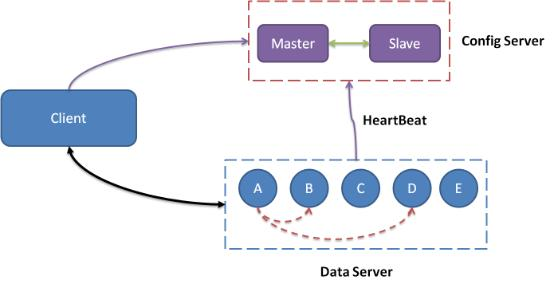

产品概览
Tair 是快速访问内存 (MDB)/持久性 (LDB) 存储服务。
Tair采用高性能、高可用的分布式集群架构，可以满足企业对读写性能和可扩展容量的高要求。
系统架构
Tair 集群具有三个必要的模块：ConfigServer、DataServer 和客户端。

通常，一个 Tair 集群包括两个 ConfigServer 和多个 DataServer。 两个 ConfigServer 充当主服务器和备用服务器。 DataServer 和 ConfigServer 之间的心跳检查用于检查集群中活跃的和可用的 DataServer，以建立集群中数据的分布（比较表）。 DataServers 按照 ConfigServer 的指示存储、复制和迁移数据。当客户端启动时，它从 ConfigServer 获取数据分布信息。客户端根据这些数据分布信息，与对应的DataServer进行交互，执行用户的请求。
在架构上，ConfigServer 的作用类似于传统应用系统中的中心节点。整个集群服务依赖于ConfigServer。 事实上，Tair 的 ConfigServers 是非常轻量级的。当一个工作的 ConfigServer 遇到停机时间时，另一个 ConfigServer 会在几秒钟内自动接管。 即使两个 ConfigServer 同时停机，只要 DataServer 没有变化，Tair 也可以正常运行。 用户只需要将应用程序连接到 ConfigServers，不需要知道内部节点的详细信息。
ConfigServer
两个 ConfigServers 作为主服务器和备用服务器。
集群的实时和可用 DataServer 节点信息是使用 ConfigServer 和 DataServer 之间的心跳检查确定的。
ConfigServer根据DataServer节点信息构建数据分布表，展示数据在集群中的分布情况。
ConfigServer 提供数据分发表查询服务。
ConfigServer 调度数据服务器之间的数据迁移和复制。
DataServers 数据服务器
DataServers 提供存储引擎。
DataServers 接收客户端发起的操作，例如 put/get/remove。
DataServers 迁移和复制数据。
DataServers 提供访问统计信息。
Clients 客户端
客户端提供用于访问 Tair 集群的 API。
客户端更新和缓存数据分发表。
客户端提供LocalCache，防止过热的数据访问影响Tair集群服务。
客户端控制流量。
产品特点
分布式架构
分布式集群架构用于提供自动灾难恢复和故障转移。
支持负载均衡，数据分布均匀。
系统存储空间和吞吐量性能可以弹性伸缩，解决数据量和QPS性能限制。
功能齐全且用户友好的访问
数据结构丰富。 支持单级键值结构和二级索引结构。
支持各种用途。 还支持计数器模式。
支持数据过期和版本控制。
Version 支持
Tair 中的每个数据都包含版本号，版本号在每次更新后都会递增。这个特性有助于防止由于数据的并发更新导致的问题。
比如，系统有一个 value 为 “a,b,c”，A 和 B 同时 get 到这个 value。A 执行操作，在后面添加一个 d，value 为 “a,b,c,d”。B 执行操作添加一个 e，value 为”a,b,c,e”。如果不加控制，无论 A 和 B 谁先更新成功，它的更新都会被后到的更新覆盖。
Tair 无法解决这个问题，但是引入了 version 机制避免这样的问题。还是拿刚才的例子，A 和 B 取到数据，假设版本号为 10，A 先更新，更新成功后，value 为”a,b,c,d”，与此同时，版本号会变为 11。当 B 更新时，由于其基于的版本号是 10，服务器会拒绝更新，从而避免 A 的更新被覆盖。B 可以选择 get 新版本的 value，然后在其基础上修改，也可以选择强行更新。
Item 支持
Tair 还支持将 value 视为一个 item 数组，对 value 中的部分 item 进行操作。比如有个 key 的 value 为 [1,2,3,4,5]，我们可以只获取前两个 item，返回 [1,2]，也可以删除第一个 item，还支持将数据删除，并返回被删除的数据，通过这个接口可以实现一个原子的分布式 FIFO 的队列。
用途
数据库缓存
随着业务量的增加，对数据库系统的并发请求越来越多，数据库系统的负载越来越重。当数据库系统过载时，响应速度会变慢，在极端情况下甚至会导致服务中断。
为了解决这个问题，Tair MDB 可以与数据库产品一起部署，以提供高吞吐量和低延迟的存储。
MDB 响应速度快，一般毫秒级完成请求。而且，MDB 支持更高的 QPS 速率，可以处理比数据库更多的并发请求。
通过观察业务，用户可以将热点数据存储在MDB中，显着减轻数据库的负载。这不仅降低了数据库成本，还提高了系统可用性。
临时数据存储
社交网站、电商网站、游戏、广告等应用需要维护大量的临时数据。
在 MDB 中存储临时数据可以减少内存管理开销和应用程序负载。在分布式环境中，MDB可以作为统一的全局存储，可以防止单点故障造成的数据丢失，解决多个应用之间同步的问题。
一个常见的例子是使用 MDB 作为会话管理器。如果网站采用分布式部署，并且流量很大，同一用户的不同请求可能会发送到不同的Web服务器。
在这种情况下，MDB 可以作为全局存储解决方案来保存会话数据、用户令牌、权限信息等数据。
数据存储
推荐和广告业务通常需要离线计算大量数据。 LDB 支持持久存储并提供卓越的性能。
支持在线服务，允许用户定期将离线数据导入LDB进行在线服务。
经过计算，列表业务可以将最终列表存储在LDB中，直接展示给前端应用程序。
这样，LDB 就满足了存储和高速访问的需求。
黑名单/白名单
安全应用程序有许多黑名单/白名单方案。这些黑名单/白名单场景的特点是命中率低、访问量大、数据丢失导致业务损失。
LDB 支持数据持久化和高访问量，因此在这些场景中被广泛使用。
分布式锁
分布式锁通常用于防止多线程并发导致的数据不一致和逻辑混乱。分布式锁可以使用 Tair 的版本特性或计算功能来实现。
得益于LBS的持久化，即使服务宕机，锁也不会丢失，可以正常释放。